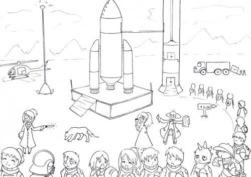

Après les intérêts scientifiques, c’est aujourd’hui le tourisme spatial qui commence à prendre un essor considérable. Qui n’a jamais rêvé de parcourir l’univers ? Bien que l’Homme en soit encore loin, les avancées technologiques de ces dernières années permettent d’envisager un avenir où le commun des mortels pourra voyager dans l’espace.
Le tourisme spatial
Le premier voyage touristique spatial a été organisé par des responsables du programme spatial russe. En effet, ce voyage leur a permis de trouver une source de financement après la crise dans les années 1990. Le premier vol touristique spatial a été réalisé en 2001 avec Dennis Tito. Cet homme a séjourné quelques jours à bord de l’ISS
ISS
La Station Spatiale Internationale est un projet international dont la construction a commencé à être réalisée en 1998 grâce à de nombreuses agences spatiales de différents pays dont la NASA, le CNES (France), le Roscosmos (Russie) , etc.

Placée sur une orbite basse (330-420km), elle est habitée en permanence par un équipage mixte et international d’astronautes et scientifiques de différentes spécialités.
Actuellement elle a une masse d’environ 400 tonnes et occupe la surface d’un terrain de football.
. Aujourd’hui, il n’existe aucune société qui permette d’aller réellement dans l’espace. En effet, les vols proposés actuellement sont au mieux des vols suborbitaux, qui ne rentrent donc pas en orbite autour de la Terre.
- 
- Un futur proche ou un rêve inaccessible ?
- Une représentation humoristique de ce que pourrait devenir le tourisme spatial
©Amorim et Pascal (pour le TPE)
Le vol suborbital
Le vol suborbital consiste à franchir la frontière de l’espace : la ligne de Karman ligne de Karman C’est le nom donné à la ligne imaginaire limite imaginaire définissant la limite entre la Terre et l’espace pour les normes internationales. Pour la fédération aéronautique internationale, elle se situe à 100 km d’altitude. C’est à partir de cette altitude que l’atmosphère est trop ténue pour que l’on néglige ses effets. et à revenir sur Terre à bord d’un véhicule particulier prévu à cet effet. Ce vol est beaucoup moins coûteux que de sortir de l’atmosphère, mais il ne permet pas de se mettre en orbite. Il ne permet pas non plus de rester longtemps dans l’espace faute d’énergie. C’est ce type de vol que des sociétés proposent aujourd’hui.
Après son décollage, le vaisseau effectue une trajectoire « en cloche » pour atteindre les 100 km d’altitude. Au bout d’une dizaine de minutes pendant lesquelles les touristes spatiaux peuvent profiter d’une vue incomparable, l’engin revient finalement sur Terre.
Ce vol permet donc de vivre l’accélération d’un moteur fusée, de voir la Terre depuis l’espace, et de découvrir un état d’apesanteur pendant quelques minutes (à partir de 60km d’altitude) [1].
Le vol parabolique
Un vol parabolique a pour but de simuler l’impesanteur présente en orbite autour de la Terre. Depuis 1997, grâce à l’Airbus A300 Zéro-G, (et depuis octobre 2014 grâce à l’A310 Zéro-G) les vols paraboliques étaient surtout un moyen de s’entraîner pour les futurs astronautes. Aujourd’hui, de nombreux touristes amateurs de sensations fortes prennent d’assaut les vols paraboliques.
Un vol parabolique se constitue de quatre étapes :
- Le pilote monte à une altitude de 20 000 pieds (6100 mètres) en augmentant progressivement sa vitesse jusqu’à environ 810 km/h.
- Hypergravité : le pilote incline l’avion progressivement jusqu’à 47°. Cette phase multiplie par 1.8 le poids des passagers.
- Injection : une fois les 47° atteint, les moteurs sont réduits fortement et l’avion entre en phase parabolique.
- A la fin de la trajectoire parabolique, le pilote redresse l’avion. Les passagers retrouvent à nouveau pendant quelques secondes la phase d’hypergravité.
Lors de l’injection, toutes les forces aérodynamiques s’appliquant sur l’avion s’annulent. L’avion, soumis à son seul poids, entre en phase parabolique et tous les passagers sont alors en impesanteur.
Ces manœuvres sont généralement effectuées plusieurs fois par vol afin de reproduire l’état d’apesanteur plusieurs fois.
Voici un extrait d’une vidéo de l’ESA montrant les effets d’un vol parabolique :
Dans cet extrait de vidéo, nous pouvons apercevoir de nombreuses expériences à bord. En effet, les vols paraboliques permettent de recréer une phase de micropesanteur pendant une durée moyenne de 22 secondes. Cette phase permet de valider des expériences scientifiques qui ont été sélectionnées pour être réalisées par les astronautes de l’ISS. Nous pouvons voir également qu’il y a quelques touristes à bord qui expérimentent l’impesanteur [2].
Les sociétés de tourisme spatial
Quelques sociétés de tourisme spatial ont commencé à apparaître. Par exemple, Virgin Galactic propose un vol orbital pour environ 250 000 dollars. Mais il ne s’adresse qu’à des touristes qui acceptent de pratiquer un long entraînement [3].
Dans l’extrait vidéo ci-dessus, on assiste au décollage du SpaceShipTwo de Virgin Galactic le 10 Janvier 2014. On voit les différentes étapes qui permettent de dépasser la ligne de Karman
Jusqu’à maintenant [4] seulement 7 touristes spatiaux ont pu bénéficier de ce loisir, mais la compagnie Virgin Galactic compte déjà plus de 700 réservations pour ses vols, dont 18 faites par des français.
Le tourisme spatial reste dangereux, même si de nombreux moyens de sécurité sont mis en place. Le vaisseau spatial SpaceShipTwo de Virgin Galactic s’est en effet écrasé dans le désert de Mojave le 31 octobre 2014, faisant un mort et un blessé grave.